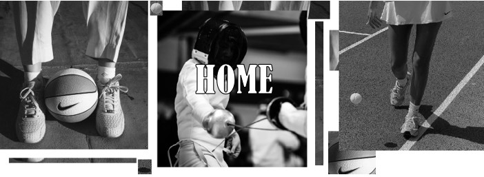

 Why ICT? Studying Information and Communication Technology (ICT) at the bachelor's level offers a multitude of compelling reasons. Firstly, ICT is the backbone of our increasingly digital world. It plays a pivotal role in virtually every aspect of modern life, from business and healthcare to education and entertainment. By pursuing a bachelor's degree in ICT, you position yourself at the forefront of this digital revolution, equipping yourself with the knowledge and skills needed to thrive in today's technology-driven society. Moreover, the demand for ICT professionals continues to surge. Organizations across the globe are actively seeking qualified individuals who can design, develop, and manage technology systems. With a bachelor's degree in ICT, you not only open the doors to a wide array of career opportunities but also enjoy the prospect of job security and the potential for lucrative salaries. Whether you're passionate about software development, cybersecurity, data science, or network administration, ICT offers diverse specializations that cater to your interests and career aspirations. It's a field that's constantly evolving, ensuring that you'll always have the chance to learn and grow as technology advances. In essence, studying ICT at the bachelor's level offers you the foundation for a dynamic and future-proof career in a world where technology continues to shape our present and future. (To read a detailed motivation click here) Sports Some of the sports I have played in the past are: Fencing Basketball Swimming Horse riding Dodgeball Wall Climbing Tennis